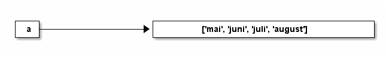

Programmering og modellering X
Innhold
Introduksjon
Prosessoren (CPU-en) i en rimelig datamaskin kan i dag gjennomføre over 10 milliarder desimaltallsoperasjoner hvert sekund. Hold en ball en meter over bakken. Fra du slipper ballen, til den treffer bakken, kan datamaskinen din fylle ut en gangetabell som går fra 1 til 45 000.
Datamaskiner endrer spillereglene fullstendig.
Personlig tror jeg ikke det er essensielt at hver og en av oss må kunne programmere disse maskinene. Jeg tror dog det er viktig, og at det stadig blir viktigere, at vi veit hvilke muligheter programmeringen åpner for. Nesten uavhengig av hvilket fagfelt du jobber innenfor, finnes det oppgaver som best lar seg løse med programmering.
Programmering i seg selv er en ferdighet uten andre krav til forkunskaper enn at du må kunne lese og skrive. For de fleste byr allikevel programmering på en bratt læringskurve. Datamaskiner er ufattelig gode til noen ting, spesielt regning, og tilsvarende dårlig til andre. Der vi kan lese en setning som «dnene steningen ihonnelder neon fiel», vil if x == 2 og if x = 2 kunne være forskjellen på et dataprogram som fungerer og et som ikke fungerer.
Som spirende programmerer kommer du til å kjenne på både frustrasjon og irritasjon, men forhåpentligvis en overvekt av mestringsfølelse og glede. I starten bruker vi gjerne tre timer på å automatisere en jobb det ville tatt oss fem minutter å gjøre for hånd. Tro meg uansett når jeg sier at følelsen når kodesnutten kjører uten feilmelding etter tre timers jobb gjør det mer enn verdt investeringa.
Lykke til!
Et første program
Før vi gjør noe annet, kan vi ha et kort førstemøte med Python. Om du er på en Windows-maskin med Python installert (er du elev i Osloskolen, skal det være tilfellet) kan du trykke på Windows-knappen på tastaturet, skrive «cmd» i feltet som kommer opp, trykke enter, og forhåpentligvis få opp noe à la følgende.

I det vinduet skal du nå kunne skrive «python» og trykke enter. Du bør få opp litt tekst og til slutt en linje som viser >>>.
Forsøk å skrive følgende linjer og trykk enter etter hver.
>>> print("Hei, verden!")
>>> 2 + 2
>>> 2 + 2 == 5
>>> # print("Hei, verden!")
Du bør ha fått noe lignende det under tilbake.
Hei, verden! 4 False
I så fall, godt jobba! Du har nå begynt å skrive litt Python. Vi kommer snart tilbake til hvordan jeg ønsker at du skal jobbe med kodesnuttene som står på denne sida mens du jobber deg gjennom temaene.
Faget
Denne sida er opprinnelig skrevet for faget Programmering og modellering X slik det fremstår ved skolestart høsten 2018. Vi har da følgende læremål å forholde oss til:
Grunnleggende programmering
- gjøre rede for overgangen mellom høynivåkode og lavnivåkode
- omgjøre problemstillinger til konkrete delproblemer, vurdere hvilke delproblemer som lar seg løse digitalt, og utforme løsninger for disse
- bruke grunnleggende programmering som variabler, datatyper, løkker, tester, plotting, tilfeldige tall, funksjoner og enkel brukerinteraksjon
- lage strukturerte og oversiktlige programmer med hensiktsmessige kommentarer
Matematiske metoder
- lage programskisser og algoritmer med utgansgpunkt i et matematisk problem
- bruke og utlede numeriske metoder for å derivere og integrere funksjoner
- bruke og utlede metoder for å finne nullpunter til funksjoner
- bruke og utlede numeriske metoder til å løse differensiallikninger
- sammenligne noen analytiske og numeriske metoder
Modellering
- utforme matematiske modeller med utgangspunkt i praktiske problemstillinger og vurdere modellene
- gjøre rede for modellbegrepet og drøfte ulemper og fordeler ved noen modeller
- sammenligne resultater fra simuleringer med eksperimentelle data
- planlegge, utføre, drøfte og presentere et selvstendig arbeid knyttet til modellering
Dette er hårete, men gjennomførbare, mål for et «tretimersfag». For de av dere som har gledet seg til å lære å programmere, er det grunnleggende programmering som i hovedsak dekker dette. Her skal vi lære ting som er essensielle for all programmering, uavhengig av bruksområde. Gjennom arbeidet innenfor disse temaene, skal vi forsøke å legge et solid programmeringsgrunnlag, som du skal kunne bruke på hjemmeprosjekter, når du sitter på studiebenken og har valgt informatikk som fagfelt eller når du jobber som ingeniør.
Opplegg
Vi legger opp en prosjektbasert gjennomgang. Når man hører om at lister i Python er «muterbare», at funksjoer kan ha «bieffekter» eller at self viser til instansen av klassen som kjører metoden, er det nyttig om du ser behovet for disse fagbegrepene i et arbeid du holder på med.
Vi kommer til å ha to prosjekter på høsten og to på våren. Jeg kommer til å legge noen anbefalinger for hvilke prosjekter dette kan være, men jeg er åpen for forslag om du har noe annet du kunne tenkt deg å se nærmere på.
Bruk av nettsida
Denne nettsida er bygd opp rund å skulle kunne være fullstendig tastaturnavigerbar.
Du kan til enhver tid skrive «?» på tastaturet for å få opp en hjelpeside. Bruk den.
Jeg har med vilje ikke lagt inn noe kommentarfelt til hvert kapittel, men ønsker at du flittig bruker spørrefunksjonen som har tastatursnarvei «q». Du vil da tas til Github, en sosial nettside for programmering, hvor denne sida ligger lagret. Still spørsmålet ditt der, så vil forhåpentligvis noen snarlig kunne hjelpe deg. Spesielt relevante spørsmål legger jeg lenke til ved de temaene det gjelder.
Koden til hvert kapittel ligger tilgjengelig som egen fil under hver kapitteloverskrift. Jeg anbefaler dog at du kun bruker denne direkte om du virkelig står fast. Forsøk først å skrive av eventuell kode direkte fra nettsida, da dette gjør at du får en bedre forståelse av hva programmet gjør og hvordan det fungerer.
Hvorfor i all verden ser den så dårlig ut på mobil? – ukjent elev, 2018
Jeg jobber med saken. – Tarjei Bærland, 2018
Matematikk og programmering
Programmering
Når vi programmerer, setter vi opp et sett med instrukser til datamaskinen. Disse instruksene er en trinnvis gjennomgang av hvordan maskinen skal løse et problem.
Med en fiktiv maskin som i utgangspunktet kun kan legge sammen og trekke fra, hva forsøker vi å få maskinen til å gjøre via trinnene under?
sett a til å være tallet 5
sett b til å være tallet 3
sett svar til å være tallet 0
så lenge b er større enn null, gjør følgende:
oppdater svar ved å legge til a
senk verdien til b med 1
Hva vil verdien til svar være når dette programmet har kjørt ferdig?
Matematikk
Det forrige eksempelet ville vi løst matematisk ved å skrive opp følgende uttrykk:
\[ \textrm{svar} = 5 + 5 + 5 = 5 \cdot 3 \]
svar har altså verdien 15. Her forteller vi ikke lenger hvordan det skal regnes ut, vi sier bare hva svar er.
Dette kunne vi gjort i de aller fleste programmeringsspråk òg, i Python ville det for eksempel sett ut som følger:
a = 5 b = 3 svar = a * b
Som da ville gitt oss…
print(svar)
15
Dette kan vi gjøre fordi Python kommer med gangefunksjonen innebygd. Det dukker dog raskt opp matematiske påstander vi ikke kan løse uten en trinnvis prosess.
Et enkelt matematisk spørsmål kan for eksempel være at «hva er produktet av de førti første primtallene?» Dette har vi i de aller fleste programmeringsspråk ikke direkte måte å løse, vi må fortelle maskinen hva den skal gjøre instruks for instruks.
Programmeringsspråk
Vi skal gjennom arbeidet i denne bokajeg kommer ikke på noe bedere å kalle det bruke programmeringsspråket Python.
Det er mange gode grunner til å velge Python, vi skal gå gjennom noen av dem straks, men vit med sikkerhet det at vi like så godt kunne valgt et annet språk.
Valg av språk
Det finnes et utall programmeringsspråk. Noen språk er bedre egnet enn andre for visse oppgaver, intet språk er best på alt. Om du veit at det eneste du skal jobbe med er statistikk, ville kanskje det rette valget for deg være språket R; om du skal jobbe med Arduino bør du bli kjent med C++; om du ikke liker den imperative fremgangsmåten de fleste språk byr på, men ønsker en mer funksjonell tilnærming, plukk opp Haskell; elsker du parenteser, se nærmere på Lisp; vil du skrive programmer som kjører i nettleseren, lær deg Javascript; hater du deg selv, sett deg ned med Brainfuck (jeg beklager språket).
I dette faget kommer vi til å bruke språket Python. Python er et populært språk av mange grunner, og dets populæritet gjør at man kan bruke det innenfor mange fagdisiplinerer. En av fordelene med Python, er at overgangen fra pseudokode til kjørende program ofte er lite. Under ser vi pseudokoden fra tidligere oversatt til Python.
a = 5 b = 3 svar = 0 while b > 0: svar = svar + a b = b - 1 print(svar)
15
Ulike typer programmeringsspråk
I teorien kan alle programmeringsspråk som er såkalt turingkompletteEtter Alan Turing, av «The Imitation Game»-berømmelse beregne alt som kan beregnes. For at et språk skal være turingkomplett, må det litt forenklet ha mulighet til å gjenta kode om en betingelse ikke er nådd og kunne skrive og lese fra minnet. Dette gjelder i praksis alle programmeringsspråk.
Allikevel er det en voldsom forskjell på de ulike språkene. Et klassisk eksempel de fleste programmere har vært innom, er å få maskinen til å si "Hello, world!". La oss se på det for tre ulike språk.
«Assembly»
extern exit, printf
section .data
msg db "Hello World!", 10, 0
section .text
global main
main:
push msg
call printf
mov dword [esp], 0
call exit
Assembly er ikke ett programeringsspråk, men en samlebetegnelse for språkene skrevet spesifikt for hver CPU-type. Språket brukt over (hentet fra denne snutten) er ment for den såkalte x86-arkitekturen.
C
#include<stdio.h> int main() { printf("Hello, world!"); return 0; }
C er et klassisk programmeringsspråk og det dukker opp mer eller mindre over alt.
Python
print("Hello, world!")
Den vanligste utgaven av Python er skrevet i C.
Høynivå og lavnivå
Vi ser tydelige forskjeller på eksemplene over. Assembly-koden ligger nære de instruksjonene CPU-en sjøl trenger for å kunne skrive «Hello, world!» på skjermen, mens Python-koden mer eller mindre bare repeterer oppgaveteksten.
Vi sier at assembly er lavnivå-kode, siden man må bruke ressurser på for eksempel direkte minnehåndtering når man skriver i det. Python derimot er høynivå-kode, hvor brukeren ikke behøver tenke på slikt. C legger seg et sted mellom de to.
Imperative og deklarative kode
Felles for de tre eksemplene over er at vi for hver linje i koden forteller programmet hva det skal gjøre, vi sier at kodestilen er imperativ.
Et alternativ til imperativ kode er deklarativ kode. Da forteller vi programmet kun hva vi har lyst på, ikke nødvendigvis hvordan vi ønsker at problemet skal løses.
Under kommer to python-løsninger til oppgaven «lag en liste med de 100 første kvadrattaellene».
n = 1 # sett verdien av n til 1 kvadrattall = [] # sett verdien av kvadrattall til [] while n <= 100: # gjør den kommende snutten så lenge n er mindre eller lik 100 kvadrattall.append(n * n) # tilføy n * n i kvadrattall n += 1 # øk verdien til n med 1
kvadrattall = list(map(lambda x: x ** 2, range(1, 101)))
Her er det mange ord du ikke har sett før. Noen av dem kommer du til å bli svært godt kjent med, mens andre skal få lov til å holde seg obskure en god stund til. Med dette eksempelet ønsket jeg å illustrere at man innad i ett programmeringsspråk kan skrive innenfor mange ulike stiler.
Noen språk egner seg dog bedre til visse stiler, vi kommer i all hovedsak til å skrive imperativ kode i Python.
Basispython
Regnerekkefølge og kommandolinja
Siden Python-programmer kan oversettes til maskinkode løpende, kan vi jobbe interaktivt med Python, à la slik vi er vant med fra CAS i Geogebra. Vi kan altså, om vi ønsker, skrive en linje med kode, se hva denne gjør, for så å skrive neste.
For å åpne en enkel Python-«prompt» (som er navnet på det som i vårt tilfelle tegnene «>>>»), kan du åpne kommandolinjeverktøyet ved å trykke windows-tasten og skrive «cmd», trykke enter, og skrive python og trykke enter i vinduet som åpner seg. Du skal få fram noe lignende følgende:
Python 3.6.1 |Anaconda 4.4.0 (64-bit)| (default, May 11 2017, 13:25:24) [MSC v.1900 64 bit (AMD64)] on win32 Type "help", "copyright", "credits" or "license" for more information. >>>
Hver gang du ser >>> «prompter» Python deg til å skrive inn en kommando.
Vanlige regneoperasjoner gjennomfører vi i Python på akkurat den måten man skulle forvente.
>>> 2 + 3 # addisjon ved å skrive "+" mellom to verdier 5 >>> 2 - 3 # subtraksjon ved å skrive "-" mellom to verdier -1 >>> 2 * 3 # multiplikasjon ved å skrive "*" mellom to verdier 6 >>> 2 ** 3 # eksponentiering ved å skrive "**" mellom to verdier 8 >>> 2 * (5 - 3 ** 2) ** 2 # regnerekkefølge oppfører seg på "vanlig" måte 32
Av disse er det kun potensen som skiller seg ut fra hvordan vi «vanligvis» skriver regning.
Du kan med andre ord begynne å bruke Python som en kalkulator uten mer om og men … om enn kun å gjøre dette ville være å skrape den aller øverste delen av overflaten av hvilke muligheter et fullverdig programmeringsspråk byr på.
Prøv deg fram på vanlig tallregning i Python direkte i interpreteren.
Variabler
Vi kan nå gjennomføre enkle regneoperasjoner, men det melder seg raskt et behov for å kunne ta vare på resultatet fra en utregning, for så å kunne bruke dette i en annen utregning seinere. Dette kan vi gjøre via navngitte variabler.
Hva er et navn?
I Python viser navn alltid til verdier.

I Python kan det godt være to navn på samme verdi.

Python har dynamiske typer noe som vil si at vi kan gjenbruke navn på helt andre type verdier enn hva de opprinnelig blei brukt på.
a = 42 b = a a = "Babel"
Som gir følgende navnstruktur:

Dette er i kontrast til et språk som C, hvor vi for eksempel ville sett følgende:
int a = 42; a = 42.0;
Dette er fordi C er et språk med statiske typer. Det vil si at om vi har sagt at a skal være et heltall (int), må vi holde den som det gjennom hele programmet.
Interaksjon
Printing
Fra de fleste programmer ønsker vi en eller annen form for informasjon ut fra programmet. Dette kan være at programmet lager en graf for oss, at den skriver data til en fil, at interpreteren skriver svaret direkte på mellomregninger, eller at programmet skriver tilbake til kommandolinja.
Sistnevnte gjøres via funksjonen print.
print("Hei, verden!")
Det er heller ikke noe i veien for å kombinere printing med variabler.
a = 2 b = 3 c = a + b print("Summen av ", a, " og ", b, " er ", c, ".")
Dette kan fort bli en uhensiktsmessig måte å skrive ut svar på, så vi bruker heller den innebygde formateringen f-strenger.
print(f"Summen av {a} og {b} er {c}.")
f-strenger er særegent for Python, men andre språk har gjerne sine måter å formatere tekstrestrenger på. Dette er et kraftig verktøy, hvor vi har store muligheter for å formatere svarene våre på en hensiktsmessig måte.
Vi kan, eksempelvis, spesifisere hvor mange desimaler vi ønsker. (Setningen from math import pi¨ skal vi se i mye mer detalj på seinere.
from math import pi print(pi) print(f'pi skrevet med 5 gyldige siffer er {pi:.5}.')
Generelt kan vi spesifisere et tall som skal skrives ut ved å bruke tallets totale bredde og dets presisjon på en enkel måte med f-strenger.
bredde = 7 presisjon = 3 print(f'pi = {pi:{bredde}.{presisjon}}')
Input
Å be brukeren om å taste inn verdier til programmet ditt kan enkelt gjøres ved å bruke input-funksjonen. Om vi er usikre på hvordan denne brukes, kan vi benytte oss av pythons innebygde hjelpefunksjonalitet.
help(input)
Help on built-in function input in module builtins:
input(prompt=None, /)
Read a string from standard input. The trailing newline is stripped.
The prompt string, if given, is printed to standard output without a
trailing newline before reading input.
If the user hits EOF (*nix: Ctrl-D, Windows: Ctrl-Z+Return), raise EOFError.
On *nix systems, readline is used if available.
input er altså en innebygd (built-in) funksjon som leser en tekststreng fra standard input. Dersom vi ønsker å gi brukeren en prompt, à la «>>>» kan vi gjøre det ved å gi det som argument til funksjonen.
navn = input("Hva heter du? ") print("fDu heter {navn}." )
Typer
Et pythonprogram er et sett med instruksjoner som handler på ulike objekter. Objekter i Python kommer i to utgaver, skalare objekter og ikke-skalare objekter. Et skalart objekt er udelelig, det er atomene i Python. Ikke-skalare objekter, for eksempel tekststrenger, har en indre struktur. Av de følgende, er boolske verdier, heltall og flyttall skalare objekter.
Boolske verdier
I kapittelet Datamaskinen introduserer jeg logiske verdier som enten kan være sanne eller usanne. Disse er nødvendige for at vi skal kunne ha et fullstendig programerbart språk. Når vi seinere skal se på såkalte if-setninger, er vi nødt til å ha en måte å avgjøre om noe er sant eller usant på.
>>> sann = True >>> usann = False >>> sann True >>> usann False
Boolske verdier oppstår ofte når vi ønsker å vurdere en påstand. Eksempelvis er det sant at verdien 3 er større eller lik verdien 2, det er også Python enig i.
>>> 3 >= 2 True >>> 3 == 2 False >>> 3 < 2 False
Merk at = ikke er en logisk sjekk, à la ulikhetene over. Om vi ønsker å sjekke for likhet, må vi bruke ==. = er fremdeles «tildelingoperatoren», vi bruker den for å gi ting navn, noe som betyr at det ikke er noe i veien for å gjøre for eksempel følgende i Python:
sannhetsverdi = 3 > 2 print(sannhetsverdi)
Her vil først Python evaluere påstanden på høyre side, altså 3 > 2, finne at dette er sant, og dermed sette sannhetverdi til å ha verdien True.
Heltall
Heltall i Python oppgis på vanlig måte. 3, 112 eller 1231421124.
Lister
Lister eller arrays er en klassisk datastruktur. Vi samler en rekke verdier inn i en liste, for at vi så skal kunne gjøre operasjoner på lista direkte eller elementvis. Lister lages i Python ved å bruke klamme-parenteser, [ og [.
favorittall = [-1, 0, 7, 11, 42]
Det er heller ikke noe i veien for å ha noe annet enn tall i ei liste, ei heller blandede typer.
frukter = ["eple", "pære", "appelsin", "mango"]
Innholdet i ei liste kaller vi enkeltvis for listas elementer, og hvert element er tildelt en indeks. Under ser vi nærmere på frukter.
| element | eple | pære | appelsin | mango | | indeks | 0 | 1 | 2 | 3 |
Legg merke til at i Python er listene nullindeksert, altså har det første elementet i lista indeks 0.
print(frukter[0])
Vi kan hente ut elementer fra ei liste ved å bruke slice-notasjonen. Den ser ut som listenavn[første ønskede : ikke-inkludert siste ønskede : steglengde]. Om vi har liste min_liste av n elementer, kan vi hente ut de k første ved å skrive min_liste[0:k:1], alternativt bruke at nullte element er standard startverdi og 1 er standard steglengde, min_liste[:k].
print(frukter[0:2:1]) print(frukter[:2]) print(frukter[2:])
['eple', 'pære'] ['eple', 'pære'] ['appelsin', 'mango']
- Muterbarhet
Se på følgende snutt, og skriv ned hva du tror vil bli gitt av print-setningen.
a = ['mai', 'juni', 'juli', 'august'] b = a a[1] = 'november' print(f'a er: {a}') print(f'b er: {b}')
Forsøk å kjøre koden, hva ser du? Jo, der vi forventer at vi ved linja
b=askal få en kopi av listaa, ser det ut som at vi får to forskjellige navn til samme ting, og det er akkurat det vi får. En liste er en «muterbar» eller mutable datastruktur i Python. Og hva vil så det si? Jo, der vi setter


Og hvorfor er dette viktig? Jo, fordi verdier i lister kan endres uten at man oppretter en ny liste. Nå blir det vesentlig at navn i python alltid viser til et objekt, og når vi sier
b = aogaer en liste, får vi rett og slett bare ett nytt navn påa.Hvordan skal vi så gjøre det? Når vi skal kopiere en liste, kan vi gjøre dette ved å skrive
b = a[:], siden slicena[:]er en ny liste med alle elementene ia. Gjør vi dette igjen med snutten over, vil vi få ønske oppførsel.a = ['mai', 'juni', 'juli', 'august'] b = a[:] a[1] = 'november' print(f'a er: {a}') print(f'b er: {b}')
a = ['test'] b = a[:] print(id(a)) print(id(b))
enere = [1, 1, 1, 1, 1] print(id(enere)) enere += [5] print(id(enere))
enere = "11111" print(id(enere)) enere += "5" print(id(enere))
Abstraksjon
Biblioteker
Et fysikkbibliotek
tabaa004> python -m site --user-site C:\Users\tabaa004\AppData\Roaming\Python\Python36\site-packages
Her legger jeg en kort fil som jeg kaller fysikk.py. Dette skal på sikt være fysikkbiblioteket mitt. Her ønsker jeg å samle alle konstanter, samt en del formler og likninger jeg stadig ender med å bruke.
import fysikk as fy print(fy.g)
9.81
Linja import fysikk as fy er vesentlig. Den består av to nøkkelord, import og as; ett modulnavn, fysikk; og ett alias, fy.
En slik importeringssetning kommer vi til å se i de aller fleste programmene vi skal lage. Pythons motto er at det kommer «batteries included», men det betyr ikke at alt ligger tilgjengelig idet vi starter programmet, vi må importere bibliotekene.
I eksempelet over er fysikk et slikt bibliotek. Vi kommer seinere til å bruke et knippe biblioteker, spesielt math, numpy, scipy, og matplotlib.
En del slike biblioteker er en del av Pythons standardbibliotek. Det vil enkelt og greit si at utviklerne av Python også tar seg av å holde disse modulene (les: bibliotekene) ved like. En del av standardbiblioteket er innebygde funksjonerDette er funksjoner som er tilgjengelig uten noen form for ~import~-setning, f.eks. funksjonen ~sorted~, som sorterer ei liste, men det er også egne moduler man må importere, slik som math~math~ trenger vi fort, dette biblioteket inneholder både ~sqrt~ og ~factorial~..
Vårt første møte import-setninger blir også vårt første møte «punktnotasjon» eller dot notation. Vi skriver fy.g for vi ønsker å bruke g fra fysikk-modulen, som vi her har valgt å gi kallenavnet («alias»-et) fy. Vi ser av feilmeldingen under at om vi forsøker å bruke g direkte, får vi beskjed om at denne ikke er definert.
import fysikk print(g)
Traceback (most recent call last): File "<stdin>", line 1, in <module> NameError: name 'g' is not defined
Vi kommer til å møte på punktnotasjonen i en situasjon til, for bruk av metoder på objekter. Mer om det seinere.
Vårt typiske importoppsett
Du vil noen ganger se anbefalt å bruke en pakke som heter pylab. Dette er en samlepakke for tidligere nevnte scipy, numpy og matplotlib. Dette er en god pakke, men vi kommer ikke til å bruke den her. Grunnen er enkelt og greit at jeg mener den inviterer til dårlige vaner og at brukeren ikke må forholde seg til økosystemet hun jobber i. Pylab oppfordrer til å importere pakken via
from pylab import *
hvor *-markøren vil si «alt». Problemet med dette er at det nå ikke blir synlig for brukeren hvor en funksjon, klasse eller variabel kommer fra. Det øker også sannsynligheten for at man ved uhell skriver over allerede-definerte navn.
Vi kommer til stort sett til å importere i det minste følgende:
import numpy as np import matplotlib.pyplot as plt
Vi kommer også til å hente ut spesifikke funksjoner fra eksempelvis math, noe vi kan gjøre via:
from math import sqrt import math import numpy as np liste = [] liste.exte a = np.array([1, 2]) a. print(sqrt(2)) help(liste.extend)
Legg merke til at vi her ikke lenger har behov for punktnotasjon når vi skal bruke sqrt, da vi spesifikt har hentet ut denne fra math-biblioteket.
Funksjoner
Vi har nå fått et knippe verktøy for å lage ulike variabler, men vi kommer snart til å se at vi gjentar oss selv mye i programmeringen. Som programmerer bør du være på utkikk etter kode som er gjentagelser av tidligere kode, dette kan som oftes samles i en egen blokk. Vi kaller slike gjenbrukebare blokker av kode for «funksjoner» eller «underrutiner» (subrutines).

Vi har allerede brukt et par funksjoner, spesielt print-funksjonen. Denne funksjonen har et navn (print), den tar inn ett eller flere argumenter (det som skal skrives) og den gjør noe (skriver til skjermen).
Definisjon og kall
De to hovedtingene vi gjør med en funksjon er å definere den og å bruke (kalle) den. Definisjon skjer i Python ved å bruke nøkkelordet def. Et kall fungerer ved at vi skriver funksjonsnavnet og en parentes som inneholder eventuelle paramtere.
def hilsen(): """En funksjon som sier 'hei'""" print('hei') return def hilsen_navngitt(navn): """En funksjon som hilser på noe navngitt.""" print(f'Hei, {navn}!') return hilsen() hilsen_navngitt('Trond')
Legg merke til at funksjonene over ikke returnere noe. De gjennomfører setningene det de bler bedt om å gjøre, men gir ikke tilbake noen verdi.
I slike tilfeller kan vi enten skrive return, return None, eller la være å skrive noen retursetning overhodet.
Modifiser hilsen og hilsen_navngitt til heller å returnere sine respektive tekststrenger.
Ønsket oppførsel er altså for eksempel:
svar = hilsen_navngitt('Trond') print(svar)
Hei, Trond!
Ord når vi snakker om funksjoner
En funksjon defineres og i definisjonen tar funksjonen inn argumenter. Når vi kaller funksjonen, kan vi sende variabler inn som funksjonens parametere.
Strukturen på alle funksjonsdefinisjoner er som følger:
def funksjonsnavn(arg1, arg2, ...):
"""En beskrivelse av hva funksjonen gjør."""
setninger hvor funksjonen gjør noe
return det funksjonen skal returnere
La oss si vi ønsker å lage en funksjon som tar inn et tall og returnerer tallet kvadrert. Dette kan vi gjøre som vist under.
def kvadrer(x): """Kvadrer tallet x.""" svar = x * x return svar print(kvadrer(2))
I denne definisjonen (markert med nøkkelordet def), setter vi navnet til funksjonen til å være kvadrer, vi definerer ett argument x, vi har en setning i funksjonskroppen som lager en variabel som kun er synlig for funksjonen, svar, som vi setter til å være x * x, før vi avslutter med å returnere svar. Til slutt kaller vi funksjonen ved å skrive funksjonsnavnet, og å sende inn parameteren 2.
Hva er funksjonsnavnet, argumentene og returverdi for funksjonen under?
def snitt(a, b): """Gi gjennomsnittet av tallene a og b.""" svar = (a + b) / 2 return svar
Videre, i funksjonskallet under, hva vil verdien av variabelen regnet_snitt være og hva er parameterne i kallet?
regnet_snitt = snitt(4.5, 9)
Skop
Se på følgende programsnutt.
n = 3 def inkrement(n): """Øk verdien til n med 1.""" n += 1 print(f'--Vi er inne i funksjonen.') print(f'--Verdien til n er nå {n}.') return n inkrement(n) print(f'Vi er på utsiden av funksjonen.') print(f'Verdien til n er nå {n}.')
--Vi er inne i funksjonen. --Verdien til n er nå 4. Vi er på utsiden av funksjonen. Verdien til n er nå 3.
Her har vi først en variabel kalt n, som vi setter til verdien 3. Vi definerer så en funksjon med argument n. Dette argumentet har ikke noe med variabelen å gjøre, argumentet gjelder kun for funksjonen, og blir opprettet idet funksjonen blir laget. Til slutt kaller vi funksjonen
Hva skjer så om vi kjører samme skript, bare med én vesentlig endring?
n = 3 def inkrement(n): """Øk verdien til n med 1.""" n += 1 print(f'--Vi er inne i funksjonen.') print(f'--Verdien til n er nå {n}.') return n n = inkrement(n) # Obs! print(f'Vi er på utsiden av funksjonen.') print(f'Verdien til n er nå {n}.')
Kjør de to foregående programsnuttene og forklar eventuelle avvik mellom dem.
De delene av et program hvor en gitt variabel er tilgjengelig, kaller vi den variabelenes «skop», eller scope.
x = 2 def utskrift(): print(f'Inne i funksjonen er verdien til x {x}.') return utskrift() print(f'Utenfor funksjonen er verdien til x {x}.')
x = 2 def utskrift_med_indre(): x = 3 print(f'Inne i funksjonen er verdien til x {x}.') return print(f'Utenfor funksjonen er verdien til x {x}.')
Hva blir skrevet av følgende program?
def kvadrer(x): return x*x def g(y): return y + 3 def h(y): return kvadrer(y) + 3 print h(2)
Klasser
Funksjonene er verbene i programeringsspråket vårt. De gjør noe med data og kan returnere verdier. Følger vi analogien videre, vil vi da kunne si at så langt er flyttallene, heltallene, listene, tuplene, tekststrengene, og assosiasjonslistene subjektene i språket vårt. Vi har også sett hvordan vi kan lage nye verb ved å definere funksjoner, vi skal nå gå ett skritt videre ved å lage nye subjekter, klasser.
Området vi nå er på vei over i, kalles objektorientert programmering. Som nevnt tidligere, er det ikke strengt nødvendig med klasser for å kunne løse problemer, men det gjør mye av programmeringen langt enklere og mer oversiktlig. I tillegg virker klasser som et abstraksjonsnivå mellom den som skriver og den som bruker et program.
class Kloss(object): """En kloss som glir på et underlag og kan kollidere med andre klosser Klosser initieres med en masse, startposisjon og startfart, alle flyttall. """ def __init__(self, masse, startposisjon, startfart): self.masse = masse self.posisjon = startposisjon self.fart = startfart
Det er kanskje ikke helt tydelig hva denne snutten gjør ennå. Her lager vi oss en ny klasse som vi kaller Kloss. Overse (object) inntil videre. Vi sier så at klossen skal lages, «initieres» med en masse, startposisjon, og startfart, alle disse er flyttall. Ønsker vi å lage en kloss med masse 1.0 kg, startposisjon 0.0 m og startfart 1.0 m/s, kan vi gjøre dette som
kloss = Kloss(1.0, 0.0, 1.0) print(type(kloss))
<class '__main__.Kloss'>
Men … hva skjedde med __init__-argumentet self? Vel, dette dukker opp gjennom hele klossens levetid som klossen selv. Når vi skal lage funksjoner for klossen (kalt «metoder») kommer vi til å bruke punktnotasjon for å kalle disse metodene.
Slik det står nå, er klossen vår en litt kjedelig sak, vi kan, om vi ønsker, hente ut egenskapene dens, men vi kan vanskelig få den til å gjøre stort. La oss gi den en måte å bevege seg på.
class Kloss(object): """En kloss som glir på et underlag og kan kollidere med andre klosser Klosser initieres med en masse, startposisjon og startfart, alle flyttall. """ def __init__(self, masse, startposisjon, startfart): self.masse = masse self.posisjon = startposisjon self.fart = startfart def beveg(self, delta_t): self.posisjon += self.fart * delta_t
kloss = Kloss(1.0, 0.0, 1.0) t = 0 delta_t = 0.1 while t <= 1: kloss.beveg(delta_t) print(kloss.posisjon) t += delta_t
Kjenn dine røtter
Av en eller annen grunn ønsker vi å finne nullpunktet til funksjonen $f(x) = 0.7e-x - 5x + 13.$ Du setter deg ned med penn og papir, og innser raskt at du ikke kan det du behøver for å finne en analytisk løsning til oppgaven (se f.eks. løsningen til Wolfram Alpha).
Du tar derfor fram det digitale millimeterpapiret, Geogebra, tegner grafen, trykker «skjæring mellom to objekt», velger grafen og x-aksen og får opp at nullpunktet ligger ved \(x=2.61\).
Hvordan gjør Geogebra dette?
Én måte å gjøre det på er ved hjelp av halveringsmetoden. Dette er en flott måte å finne et nullpunkt på, gitt at du veit følgende:
- to punkter på funksjonen
- at funksjonsverdien er negativ i ett av disse punktene
- at funksjonsverdien er positiv i det andre av disse punktene
Vår \(f(x)\) er positiv i \(x=0\) og negativ i \(x=10\), så dette kan være gode startverdier.
Med dette på plass går algoritmen som følger:
a er en verdi hvor f(a) > 0
b er en verdi hvor f(b) < 0
eps er en bitte liten verdi, f.eks. 0.0001
hvis f( (a+b)/2 ) < 0
sett b til å være (a+b)/2
ellers
sett a til å være (a+b)/2
gjenta så lenge f( (a+b)/2 ) > eps
Her er det en gjentagende del. Om du skulle programmert dette ved bruk av en løkke, ville du brukt en for- eller while-løkke for å løse dette? Hvorfor?
For vår funksjon kommer gangen i dette til å se ut som følger:
Iterasjon nr. 1 a har verdien 0.0 b har verdien 10.0 -------------------- Iterasjon nr. 2 a har verdien 0.0 b har verdien 5.0 -------------------- Iterasjon nr. 3 a har verdien 2.5 b har verdien 5.0 -------------------- Iterasjon nr. 4 a har verdien 2.5 b har verdien 3.75 -------------------- Iterasjon nr. 5 a har verdien 2.5 b har verdien 3.125 -------------------- Iterasjon nr. 6 a har verdien 2.5 b har verdien 2.8125 -------------------- Iterasjon nr. 7 a har verdien 2.5 b har verdien 2.6562 -------------------- Iterasjon nr. 8 a har verdien 2.5781 b har verdien 2.6562 -------------------- Iterasjon nr. 9 a har verdien 2.5781 b har verdien 2.6172 -------------------- Iterasjon nr. 10 a har verdien 2.5977 b har verdien 2.6172 -------------------- Iterasjon nr. 11 a har verdien 2.6074 b har verdien 2.6172 -------------------- Iterasjon nr. 12 a har verdien 2.6074 b har verdien 2.6123 -------------------- Iterasjon nr. 13 a har verdien 2.6099 b har verdien 2.6123 -------------------- Iterasjon nr. 14 a har verdien 2.6099 b har verdien 2.6111 -------------------- Iterasjon nr. 15 a har verdien 2.6099 b har verdien 2.6105 -------------------- Iterasjon nr. 16 a har verdien 2.6102 b har verdien 2.6105 -------------------- Iterasjon nr. 17 a har verdien 2.6102 b har verdien 2.6103 -------------------- Iterasjon nr. 18 a har verdien 2.6102 b har verdien 2.6103 -------------------- Svaret er 2.6103.
Forsøk å implementere halveringsmetoden for denne funksjonen i python. Du kan bruke funksjonsdefinisjonen
import math def f(x): return 0.7 * math.exp(- x) - 5 * x + 13
og sette startverdiene til 0.0 og 10.0.